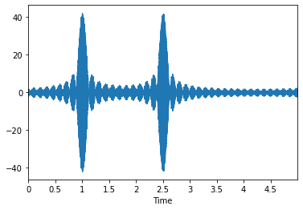

Notes on Risset Beats
Chris Tralie
One can create a musical note sequence synthesizer with a very unique timbre based on something called a Risset beat, as invented by the French composer Jean-Claude Risset. A Risset beat is a series of beat frequencies that all line up at the same time to make a pitch that stands out. In a nutshell, it's possible to write down a mathematical function that's just a sum of sines and cosines which plays an entire tune, which repeats itself infinitely!
As we saw in a class exercise, it is possible to control where the peaks of beat frequencies occur by shifting their component cosines in time. We can also make sure a beat occurs only once over an interval of time by choosing the right beat frequency. For example, let's say that we have 5 seconds of audio (called tune_length in the code), and we want to make a beat with a 330hz frequency that occurs at halfway through at 2.5 seconds. For it to occur only once, we'll want the period T of the beat to be 5 seconds, which means the beat frequency f should be 0.2hz (recall that f = 1/T). So choosing 329.8hz or 330.2 hz would be an appropriate choice. A function that makes this happens is this
\[ y(t) = \cos(2 \pi * 330 (t - 2.5)) + \cos(2 \pi * 330.2 (t - 2.5)) \]
Below is the audio we get from this
One thing that's a little unfortunate about this from a music making perspective is that the onset is very gradual. It would be even worse if we were making a much longer tune. To make the note stand out more over a shorter period of time, we can create more beats nearby. For example, if we put together 329.6hz, 329.8hz, 330hz, 330.2hz, and 330.4 hz, we get the following:
\[ y(t) = \sum_{f = 329.6, 329.8, 330, 330.2, 330.4} \cos(2 \pi f (t - 2.5)) \]
This definitely seems to stand out more against the background, but why does this happen? To see this, we note that there are now beats all over the place! In fact, we will have N*(N-1)/2 beats for N frequencies. In this example, we have 4 beats at 0.2hz, but also 3 beats at double that frequency, 2 beats at triple that frequency, and one beat at quadruple that frequency, for a total of 10 beats:
| Beats at 0.2hz (Period 5) | 329.6, 329.8 | 329.8, 340 | 340, 340.2 | 340.2, 340.4 |
| Beats at 0.4hz (Period 5/2) | 329.6, 340 | 329.8, 340.2 | 340, 340.4 | |
| Beats at 0.6hz (Period 5/3) | 329.6, 340.2 | 329.8, 330.4 | ||
| Beats at 0.8hz (Period 5/4) | 329.6, 340.4 |
These higher frequency "harmonic beats" will reach peaks in more places than the base beat, but they do all reach peaks at the chosen time offset, where they work constructively together to make a much stronger onsets. In other places, they make these "side lobes." But we can cut down on these if we use more frequencies. For example, if we take 21 frequencies in intervals of 0.2 between 328hz and 332 hz, we get the following
\[ y(t) = \sum_{f = 328, 328.2, ..., 331.8, 332} \cos(2 \pi f (t - 2.5)) \]
Now we're getting somewhere! This note is highly localized to 2.5 seconds in time now. If we took this a step further, we could also put two notes together in this fashion. Let's say, for example, that we wanted to put a note that's 287hz (a D) right before this note at t = 1. We could then simply add these two together
\[ y(t) = \sum_{f = 328, 328.2, ..., 331.8, 332} \cos(2 \pi f (t - 2.5)) + \sum_{f = 285, 285.2, ..., 288.8, 289} \cos(2 \pi f (t - 1)) \]
|  |
Basic Algorithm for Making Compositions
As you can imagine, it's possible to make an entire composition this way, and the code to do so will be particularly short with the help of loops. So that's what we'll be doing in assignment 1! Below is a video explaining the math that follows, for those who prefer that modality:
To make this concrete, let's recall the example from above
\[ y(t) = \sum_{f = 328, 328.2, ..., 331.8, 332} \cos(2 \pi f (t - 2.5)) + \sum_{f = 285, 285.2, ..., 288.8, 289} \cos(2 \pi f (t - 1)) \]
This can can be written as a two nested loops. The loop on the outside goes through the center frequencies of 330 and 287. But for each of these, we also need to add a bunch of other frequencies together. So the inner loop can do that for both 330 and 287.
Below are a few examples with more than two notes showing you what you should hear in assignment 1 if this is working properly
2.5 Second Arpeggio, 25 freqs per note |
10 Second Arpeggio, 25 freqs per note |
10 Second Arpeggio, 100 freqs per noteNotice how this one has stronger onsets than the other one with more frequencies |
Birthday 10 Seconds, 100 Freqs |